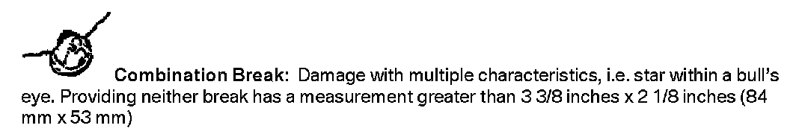

Body - Glass Repair Recommendations/Service Kit
SI B51 21 06September 2006
Body Equipment
Aftersales
SUBJECT
Glass Repair from BMW
BMW Aftersales Business Development & Marketing is pleased to announce "Glass Repair from BMW".
At least one in ten BMWs sustains some degree of windshield damage each year. Experience has shown, however, that up to 40% of windshield damage can be repaired.
Introducing Glass Repair from BMW. This windshield repair service gives Service Advisors the opportunity to further communicate the "One Stop Shop" approach to all your service clients. And by drawing new windshield repair business to your workshop, you may benefit from cross-selling opportunities, such as increased windshield sales.
Since windshields can be repaired in approximately 30 minutes, this type of work should also be offered as part of BMW Fast Lane Service, for participating centers.
ATTACHMENTS
view PDF attachment B512106Information.

What types of impact damage can be repaired?
When can a windshield not be repaired?
- Any type of damage that is in the Driver's Primary Viewing Area (DPVA) should not be repaired
- Stress cracks or long cracks
- Damage that penetrates the windshield completely
What is the Driver's Primary Viewing Area (DPVA)?
- An area on the exterior of the windshield:
- 12 inches wide (300 mm wide)
- Centered on the driver's position
- Extends from the top to the bottom of the wiper sweep
Delta Kits has been a premier windshield repair supplier since 1984. Their technical service personnel have accumulated many years of actual field experience, so BMW centers can count on quick and accurate answers to questions or concerns about windshield repair. Technical support and product information are free, as are all phone calls from within the United States.
The windshield repair system comes complete with everything necessary to achieve professional quality windshield repairs. And because these kits do not contain any unnecessary items, windshield repairs are faster, use less resin per repair and cost less than other professional systems.
Included is an order form and price sheet for the windshield repair tool kit and supplies from our business partner, Delta Kits. A complete product catalog is available from Delta by calling 800-548-8332 option 1.
BMW Centers will receive a 10% discount on all products and materials.
What is the cost of the kit and materials?
The following is to clarify the contents of the Windshield Repair Systems. Each kit contains everything you need to begin making repairs. Included with each kit is a training DVD that will help get you started.
EZK-101 Windshield Repair System - Single Bridge Professional 12v
This single bridge windshield repair system includes the new BTYC100 mobile battery system and top of the line 40-13 12v ultraviolet curing light. With this system, you no longer need to worry about accessing the 12v outlet in your customer's vehicle; everything you need is in your Windshield Repair system!
In addition to a B300 (Complete Bridge and Injection Assembly), each EZK-101 single bridge windshield repair system includes:
144-503 Tool box with Custom Fitted Foam Interior
40-13 12v Ultraviolet Lamp
BTYC100 Mobile Battery System
12-1A Cordless Drill with Charger & 1/16" Collet
144-1 2 15ml Bottles of Premium Bond Resin
144-2 7ml Bottle of Premium Pit Resin
144-3 7ml Bottle of Premium Pit Polish
144-4 Box of 100 Razor Blades
50-1 Instruction Manual
77-8T Pack of 100 Curing Tabs
77-8 100' Roll of Curing Film
144-7 Inspection Mirror
77-10 Butane Lighter
FG2 Pack of 5 Round End Carbide Burs
FG701 Pack of 5 Tapered End Carbide Burs
77-7G Steel Point Probe
77-9 Nylon Suction Cup Removal Stick
DR-52 Resin Droppers
77-4W 2 Packs of 5 White Injector Seals
JR300 Cleaning Jar & Cap
50-5 Training Video
EZK-121 Windshield Repair System - Double Bridge Professional 12v
Includes all the same great features found in the EZK-101 repair system, but with an extra B300 (Complete Bridge and Injection Assembly) for the busy glass technician.
BMW-121 Windshield Repair System - As seen at the 2006 NAC
This kit was designed for BMW to be the ultimate in glass repair. This kit was used at the 2005 NAC.
BMW121 Double Bridge 12 Volt Windshield Repair System includes:
BMW Toolbox with Custom Fitted Foam Interior
B300 Complete Bridge Assembly (2)
40-13 12v Ultraviolet Lamp
BTYC100 Mobile Battery System
12-1A Cordless Drill with Charger &1/16 inches Collet
144-8SS 5 packs MagniBond Resin One Shots (5 one shot syringes per pack)
144-2 7ml Bottle of Premium Pit Resin
144-3 7ml Bottle of Premium Pit Polish
144-4 Box of 100 Razor Blades
50-1 Instruction Manual
50-5 Training Video
77-8T Pack of 100 Curing Tabs
77-8 100' Roll of Curing Film
144-7 Inspection Mirror
FG2 Pack of 5 Round End Carbide Burs
FG701 Pack of 5 Tapered End Carbide Burs
77-7G Steel Point Probe
77-9 Nylon Suction Cup Removal Stick
77-4W 2 Packs of 5 White Injector Seals
JR300 Cleaning Jar & Cap
DS100 Moisture Evaporator
IR101 Infrared Digital Thermometer
UVS100 Ultraviolet Shield
NIT100 Protective Nitrile Gloves
PEW000 Protective Eyewear
HP200 Hood Protector
The following items are not included in kits EZK-101 and EZK-121 but are a recommended purchase.
144-8SS MagniBond Resin One Shots
Popular MagniBond Resin in single application syringes. Each syringe holds just enough resin for one large windshield repair. Eliminates resin waste, inventory problems and employee theft. Packaged in UV resistant syringes and UV resistant pouches. Sold in packs of five.
UVS100 Ultraviolet Shield
Suction cups on all four corners keep the UVS100 attached securely to the glass. Blocks the sun's ultraviolet rays to eliminate premature curing. May also be used as a rain shield. Standard size: 8 inches x 16 inches. Custom lengths available upon request.
Training
Windshield repair training will be announced shortly.

Disclaimer